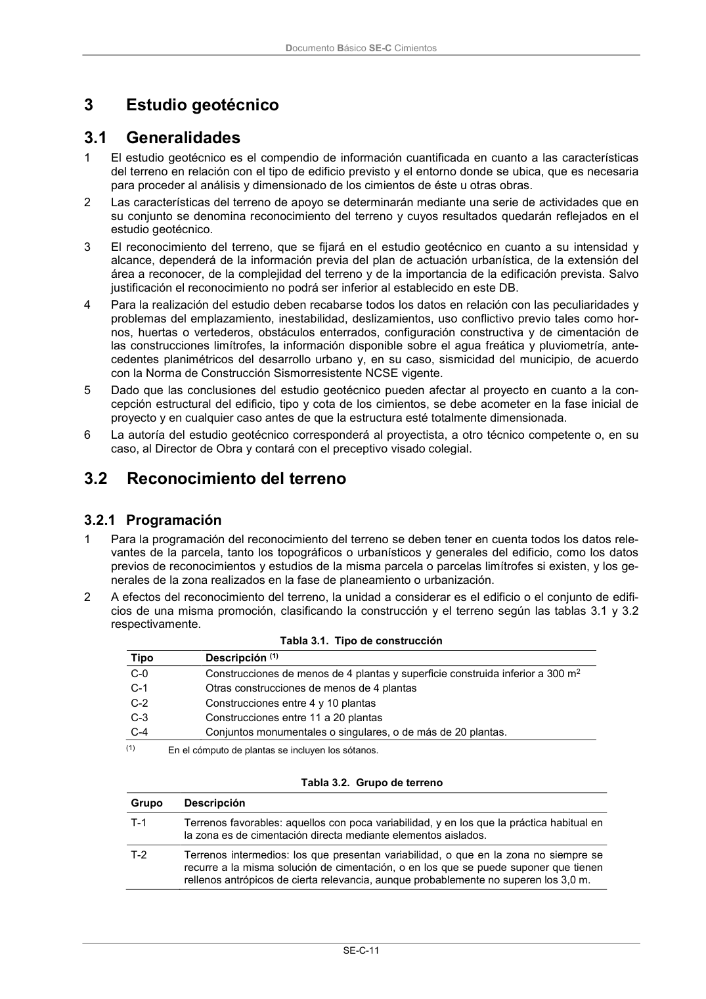

DB-SE-C Cimientos · edición 2019-12-20 · capa oficial
Documento DB-SE-C-oficial · SHA-256 del PDF a71133f4b0dca253e45ea3071c70f2a512354bcc5cd841bf89b1a502f567ac5e
Página física 16 de 165.
Copia fiel del PDF fuente · Fuente oficial
Ficha de la disposición en la fuente oficial
Formato: Texto de la página (Markdown)
Documento Básico SE-C Cimientos SE-C-11 3 Estudio geotécnico 3.1 Generalidades 1 El estudio geotécnico es el compendio de información cuantificada en cuanto a las características del terreno en relación con el tipo de edificio previsto y el entorno donde se ubica, que es necesaria para proceder al análisis y dimensionado de los cimientos de éste u otras obras. 2 Las características del terreno de apoyo se determinarán mediante una serie de actividades que en su conjunto se denomina reconocimiento del terreno y cuyos resultados quedarán reflejados en el estudio geotécnico. 3 El reconocimiento del terreno, que se fijará en el estudio geotécnico en cuanto a su intensidad y alcance, dependerá de la información previa del plan de actuación urbanística, de la extensión del área a reconocer, de la complejidad del terreno y de la importancia de la edificación prevista. Salvo justificación el reconocimiento no podrá ser inferior al establecido en este DB. 4 Para la realización del estudio deben recabarse todos los datos en relación con las peculiaridades y problemas del emplazamiento, inestabilidad, deslizamientos, uso conflictivo previo tales como hor- nos, huertas o vertederos, obstáculos enterrados, configuración constructiva y de cimentación de las construcciones limítrofes, la información disponible sobre el agua freática y pluviometría, ante- cedentes planimétricos del desarrollo urbano y, en su caso, sismicidad del municipio, de acuerdo con la Norma de Construcción Sismorresistente NCSE vigente. 5 Dado que las conclusiones del estudio geotécnico pueden afectar al proyecto en cuanto a la con- cepción estructural del edificio, tipo y cota de los cimientos, se debe acometer en la fase inicial de proyecto y en cualquier caso antes de que la estructura esté totalmente dimensionada. 6 La autoría del estudio geotécnico corresponderá al proyectista, a otro técnico competente o, en su caso, al Director de Obra y contará con el preceptivo visado colegial. 3.2 Reconocimiento del terreno 3.2.1 Programación 1 Para la programación del reconocimiento del terreno se deben tener en cuenta todos los datos rele- vantes de la parcela, tanto los topográficos o urbanísticos y generales del edificio, como los datos previos de reconocimientos y estudios de la misma parcela o parcelas limítrofes si existen, y los ge- nerales de la zona realizados en la fase de planeamiento o urbanización. 2 A efectos del reconocimiento del terreno, la unidad a considerar es el edificio o el conjunto de edifi- cios de una misma promoción, clasificando la construcción y el terreno según las tablas 3.1 y 3.2 respectivamente. Tabla 3.1. Tipo de construcción Tipo Descripción (1) C-0 Construcciones de menos de 4 plantas y superficie construida inferior a 300 m2 C-1 Otras construcciones de menos de 4 plantas C-2 Construcciones entre 4 y 10 plantas C-3 Construcciones entre 11 a 20 plantas C-4 Conjuntos monumentales o singulares, o de más de 20 plantas. (1) En el cómputo de plantas se incluyen los sótanos. Tabla 3.2. Grupo de terreno Grupo Descripción T-1 Terrenos favorables: aquellos con poca variabilidad, y en los que la práctica habitual en la zona es de cimentación directa mediante elementos aislados. T-2 Terrenos intermedios: los que presentan variabilidad, o que en la zona no siempre se recurre a la misma solución de cimentación, o en los que se puede suponer que tienen rellenos antrópicos de cierta relevancia, aunque probablemente no superen los 3,0 m.
